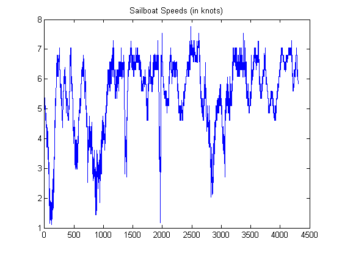
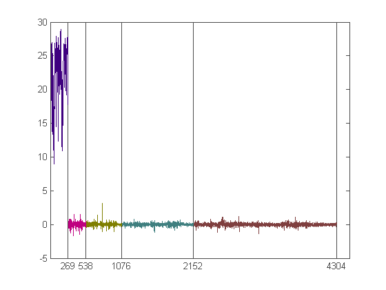
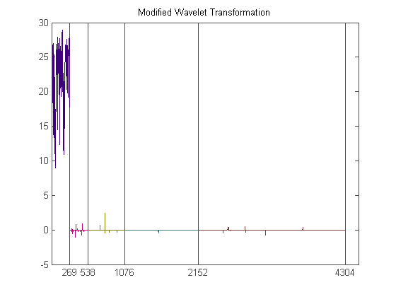
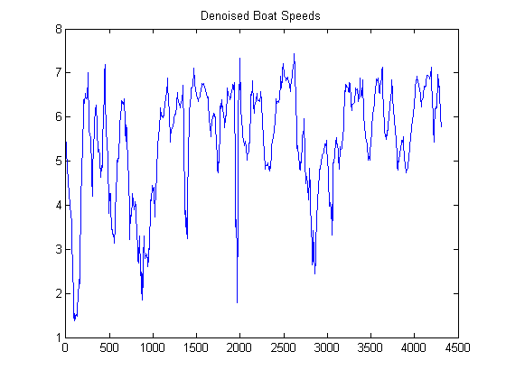
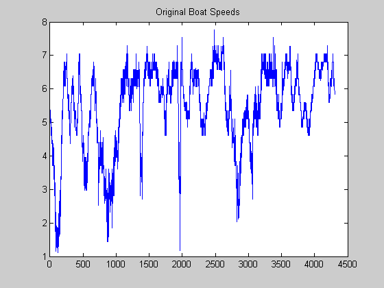

<!DOCTYPE html
  PUBLIC "-//W3C//DTD XHTML 1.0 Strict//EN">
<html xmlns:mwsh="http://www.mathworks.com/namespace/mcode/v1/syntaxhighlight.dtd">
   <head>
      <meta http-equiv="Content-Type" content="text/html; charset=utf-8">
   
      <!--
This HTML is auto-generated from an M-file.
To make changes, update the M-file and republish this document.
      -->
      <title>Signal Denoising</title>
      <meta name="generator" content="MATLAB 7.5">
      <meta name="date" content="2007-12-30">
      <meta name="m-file" content="signaldenoising"><style>
      <link rel="stylesheet" type="text/css" href="style.css">

</head>
   <body>
<div class="header">
	<div class="left"><a href="matlab:edit signaldenoising">Open signaldenoising.m in the Editor</a></div>
      <div class="right"><a href="matlab:echodemo signaldenoising">Run in the Command Window</a></div>
</div>
      <div class="content">
         <h1>Signal Denoising</h1>
         <introduction>
            <p>Signal and Image denoising is one of the primary areas where discrete wavelet transformations have made an impact.  The idea
               of wavelet shrinkage, due to David Donoho and Iain Johnstone at Stanford University is the primary tool used to perform denoising
               with wavelet transformations.
            </p>
            <p>The wavelet shrinkage process is described in Section 9.1 of the book. The basic algorithm consists of (1) computing the discrete
               wavelet transform of an input signal or image, (2) quantizing the highpass portions of the transform via the so-called shrinkage
               function with a prescribed tolerance, and (3) inverting the modified transform to obtain the denoised image/signal.
            </p>
            <p>In this demo, we will consider the task of denoising samples from an experiment performed by a group of engineering students
               and professors at the University of St. Thomas.  The reference to their paper is
            </p>
            <p>M. Hennessey, J. Jalkio, C. Greene, and C. Sullivan, "Optimal Routing of a Sailboat in Steady Winds", preprint, May 2007.</p>
            <p>The group recorded the speed of a sailboats (in knots) each second for almost 72 minutes.  Their measurements where corrupted
               by a variety of factors: current, wind changes, and sail configuration.
            </p>
            <p>We will import the data set and use wavelet shrinkage to denoise the boat speeds.</p>
         </introduction>
         <h2>Contents</h2>
         <div>
            <ul>
               <li><a href="#1">Import the Boat Speed Data</a></li>
               <li><a href="#2">Compute the Discrete Wavelet Transformation</a></li>
               <li><a href="#3">Estimate the Noise</a></li>
               <li><a href="#4">Construct the Universal Threshold</a></li>
               <li><a href="#5">Apply the Shrinkage Function to the Highpass Portions</a></li>
               <li><a href="#6">Invert the Modified Transform</a></li>
               <li><a href="#7">Things to Try</a></li>
            </ul>
         </div>
         <h2>Import the Boat Speed Data<a name="1"></a></h2>
         <p>Our first step is to import the boat speeds.  This data set comes with the Discrete Wavelets package and we can find the absolute
            path to the file name by using the DataNames command.
         </p><pre class="codeinput"><span class="comment">% Get the file name (it's the first one in DataNames).</span>
dt=DataNames();
v=textread(dt{1});

<span class="comment">% Chop some values off the end of the data so that its length is divisible</span>
<span class="comment">% by 2^4.</span>
v=ChopVector(v,4);
N=length(v);
disp(sprintf(<span class="string">'The length of v is %i.'</span>,N));

<span class="comment">% Plot the boat speeds.</span>
plot(v);
title(<span class="string">'Sailboat Speeds (in knots)'</span>);
</pre><pre class="codeoutput">The length of v is 4304.
</pre> <h2>Compute the Discrete Wavelet Transformation<a name="2"></a></h2>
         <p>We next compute the discrete wavelet transformation of the input.  We will use the Coif(1) filter and compute 4 iterations.</p><pre class="codeinput"><span class="comment">% Compute the transform.</span>
its=4;
h=Coif(1);
wt=WT1D(v,h,its);

<span class="comment">%Plot the transformation.</span>
clf;
WaveletVectorPlot(wt,its);
</pre> <h2>Estimate the Noise<a name="3"></a></h2>
         <p>The next step in the denoising process is to estimate the noise.  We use the formula sigma ~ MAD(hp(1))/.6745 (see Section
            9.1 of the text).
         </p><pre class="codeinput"><span class="comment">% First we split the wavelet transform into various parts.</span>
wtlist=WaveletVectorToList(wt,its);

<span class="comment">% We compute the MAD of the first highpass portion and divide by .6745.</span>
sigma=MAD(wtlist(1).hp)/.6745;

disp(sprintf(<span class="string">'The noise is estimated to be %f.'</span>,sigma));
</pre><pre class="codeoutput">The noise is estimated to be 0.169374.
</pre><h2>Construct the Universal Threshold<a name="4"></a></h2>
         <p>Now that we have an estimate of the noise, we can use it to find the universal threshold lambda.</p><pre class="codeinput"><span class="comment">% We need the total length of the highpass portions.  We can compute this</span>
<span class="comment">% by subtracting the length of the lowpass portion from the length of v.</span>
n=N-numel(wtlist(1).lp);

<span class="comment">% Now compute lambda.</span>
lambda=sigma*sqrt(2*log(n));

disp(sprintf(<span class="string">'The universal threshold is lambda = %f.'</span>,lambda));
</pre><pre class="codeoutput">The universal threshold is lambda = 0.690197.
</pre><h2>Apply the Shrinkage Function to the Highpass Portions<a name="5"></a></h2>
         <p>We now apply the shrinkage function with the universal threshold lambda to the highpass portions of the transform.</p>
         <p>We plot the modified wavelet transform - note the change between it and the original wavelet transform.</p><pre class="codeinput"><span class="keyword">for</span> k=1:its
    wtlist(k).hp = ShrinkageFunction(wtlist(k).hp,lambda);
<span class="keyword">end</span>

<span class="comment">% Reconstruct the transform as a vector.</span>
newwt=WaveletListToVector(wtlist,its);

<span class="comment">% Plot the modified transform.</span>
clf;
WaveletVectorPlot(newwt,its);
title(<span class="string">'Modified Wavelet Transformation'</span>);
</pre> <h2>Invert the Modified Transform<a name="6"></a></h2>
         <p>To arrive at the denoised version of the input boat speeds, we compute the inverse wavelet transform of newwt.</p><pre class="codeinput">y=IWT1D(newwt,h,its);

<span class="comment">% Plot the denoised vector y.</span>
clf;
plot(y);
title(<span class="string">'Denoised Boat Speeds'</span>);

<span class="comment">% Plot the original signal for comparison.</span>
figure;
plot(v);
title(<span class="string">'Original Boat Speeds'</span>);
</pre>  <h2>Things to Try<a name="7"></a></h2>
         <p>Make a copy of this demo and :</p>
         <div>
            <ul>
               <li>choose different filters - you can try a biorthogonal filter as well</li>
               <li>change the value of iterations to any integer 1, 2,..., 8</li>
               <li>try other tolerance values for lambda</li>
               <li>try the SureShrink method (see Section 9.3 of the book)</li>
            </ul>
         </div><pre class="codeinput">close <span class="string">all</span>;
</pre><p class="footer"><br>
            Published with MATLAB&reg; 7.5<br></p>
      </div>
      <!--
##### SOURCE BEGIN #####
%% Signal Denoising
% Signal and Image denoising is one of the primary areas where discrete
% wavelet transformations have made an impact.  The idea of wavelet
% shrinkage, due to David Donoho and Iain Johnstone at Stanford University
% is the primary tool used to perform denoising with wavelet
% transformations.  
%
% The wavelet shrinkage process is described in Section 9.1 of the book.
% The basic algorithm consists of (1) computing the discrete wavelet
% transform of an input signal or image, (2) quantizing the highpass
% portions of the transform via the so-called shrinkage function with a
% prescribed tolerance, and (3) inverting the modified transform to obtain
% the denoised image/signal.
%
% In this demo, we will consider the task of denoising samples from an
% experiment performed by a group of engineering students and professors at
% the University of St. Thomas.  The reference to their paper is
%
% M. Hennessey, J. Jalkio, C. Greene, and C. Sullivan, "Optimal Routing of
% a Sailboat in Steady Winds", preprint, May 2007.
%
% The group recorded the speed of a sailboats (in knots) each second for
% almost 72 minutes.  Their measurements where corrupted by a variety of
% factors: current, wind changes, and sail configuration.  
%
% We will import the data set and use wavelet shrinkage to denoise the boat
% speeds.

%% Import the Boat Speed Data
% Our first step is to import the boat speeds.  This data set comes with
% the Discrete Wavelets package and we can find the absolute path to the
% file name by using the DataNames command.

% Get the file name (it's the first one in DataNames).
dt=DataNames();
v=textread(dt{1});

% Chop some values off the end of the data so that its length is divisible
% by 2^4.
v=ChopVector(v,4);
N=length(v);
disp(sprintf('The length of v is %i.',N));

% Plot the boat speeds.
plot(v);
title('Sailboat Speeds (in knots)');

%% Compute the Discrete Wavelet Transformation
% We next compute the discrete wavelet transformation of the input.  We
% will use the Coif(1) filter and compute 4 iterations.

% Compute the transform.
its=4;
h=Coif(1);
wt=WT1D(v,h,its);

%Plot the transformation.
clf;
WaveletVectorPlot(wt,its);

%% Estimate the Noise
% The next step in the denoising process is to estimate the noise.  We use
% the formula sigma ~ MAD(hp(1))/.6745 (see Section 9.1 of the text).

% First we split the wavelet transform into various parts.
wtlist=WaveletVectorToList(wt,its);

% We compute the MAD of the first highpass portion and divide by .6745.
sigma=MAD(wtlist(1).hp)/.6745;

disp(sprintf('The noise is estimated to be %f.',sigma));

%% Construct the Universal Threshold
% Now that we have an estimate of the noise, we can use it to find the
% universal threshold lambda.

% We need the total length of the highpass portions.  We can compute this
% by subtracting the length of the lowpass portion from the length of v.
n=N-numel(wtlist(1).lp);

% Now compute lambda.
lambda=sigma*sqrt(2*log(n));

disp(sprintf('The universal threshold is lambda = %f.',lambda));

%% Apply the Shrinkage Function to the Highpass Portions
% We now apply the shrinkage function with the universal threshold lambda
% to the highpass portions of the transform.
%
% We plot the modified wavelet transform - note the change between it and
% the original wavelet transform.

for k=1:its
    wtlist(k).hp = ShrinkageFunction(wtlist(k).hp,lambda);
end

% Reconstruct the transform as a vector.
newwt=WaveletListToVector(wtlist,its);

% Plot the modified transform.
clf;
WaveletVectorPlot(newwt,its);
title('Modified Wavelet Transformation');

%% Invert the Modified Transform
% To arrive at the denoised version of the input boat speeds, we compute
% the inverse wavelet transform of newwt.

y=IWT1D(newwt,h,its);

% Plot the denoised vector y.
clf;
plot(y);
title('Denoised Boat Speeds');

% Plot the original signal for comparison.
figure;
plot(v);
title('Original Boat Speeds');

%% Things to Try
% Make a copy of this demo and :
%
% * choose different filters - you can try a biorthogonal filter as well
% * change the value of iterations to any integer 1, 2,..., 8
% * try other tolerance values for lambda
% * try the SureShrink method (see Section 9.3 of the book)
% 

%%
close all;
displayEndOfDemoMessage(mfilename)
##### SOURCE END #####
-->
   </body>
</html>